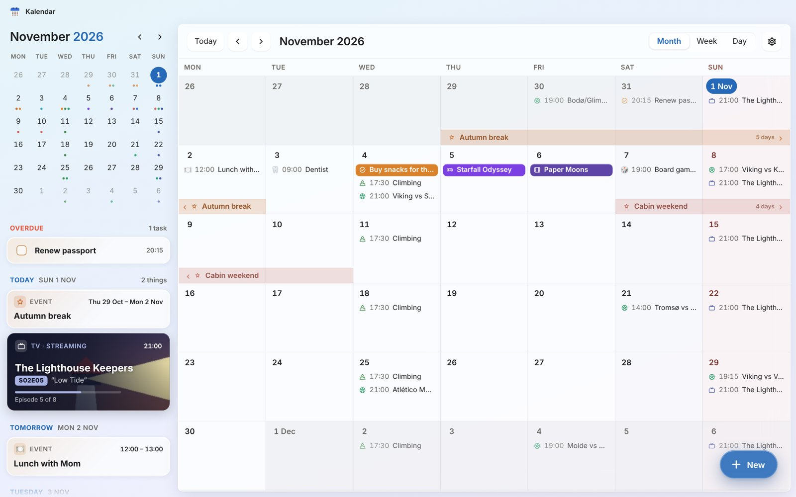

A calendar for your desktop that's actually nice to look at.
Kalendar is a free calendar app for Windows. It lives in your tray, shows today's date on its icon, and turns your plans into cards: football matches with team logos, TV episodes with posters, game and movie releases, tasks and birthdays.
Download for Windows Source code on GitHub
What it does
- Football: follow your team's fixtures and results, with logos and kick-off reminders.
- TV and movies: follow a show and new episodes appear by themselves; add movie releases with posters.
- Reminders: as many as you like, with snooze.
- Birthdays: every year, with how old they turn (and confetti).
- Google Calendar sync: keep Kalendar and your phone in step, and answer invites from Gmail.
- English and Norwegian.